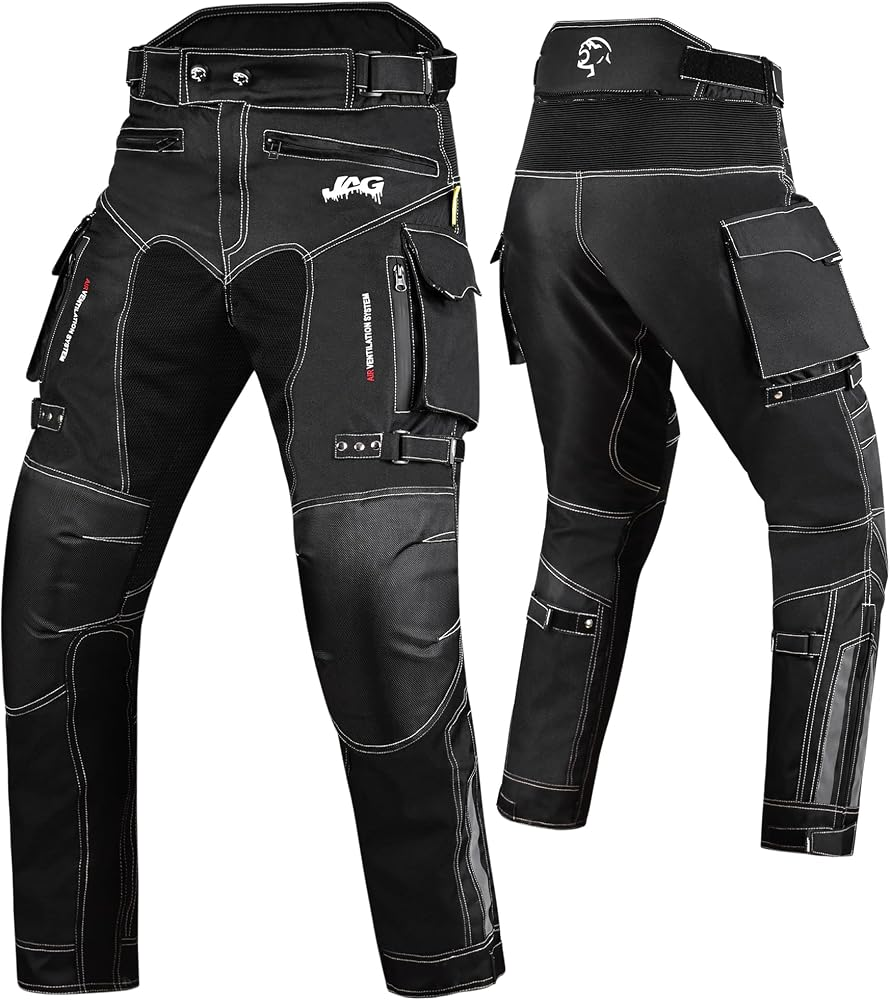

These pants are purpose-built for hot weather and urban riding, prioritizing maximum airflow without sacrificing essential safety standards.
| Specifications | Details & Features |
|---|---|
| Primary Material: 450D polyfabric & high-resistance technical mesh | Airflow: Large mesh panels on the front and back provide constant ventilation for spring/summer riding. |
| Certification: CE Class A standard for motorcycle apparel | Mobility: Ergonomic knee area designed for freedom of movement and riding comfort. |
| Knee Armor: Includes Nucleon Flex Plus Level 1 Protectors | Adjustability: Features a 3-position adjustable knee armor compartment with color-coded stitching to tailor the fit. |
| Hip Armor: Pockets ready for Bioflex Hip Protectors (armor sold separately) | Comfort: The entire crotch panel is built without an inseam to prevent chafing during rides. |
| Inner Lining: 3D inner mesh | Hygiene: The mesh lining has antimicrobial and antibacterial properties to manage moisture and reduce odors. |
| Storage: 2 front zippered garage pockets, 2 rear pockets | Practicality: Standard belt loops and overlapping rear pocket closures keep your everyday carry items secure. |
| Visibility: 3D reflective heat transfer logo and elements | Durability: The lower leg area is reinforced to withstand constant friction from motorcycle boots or technical footwear. |